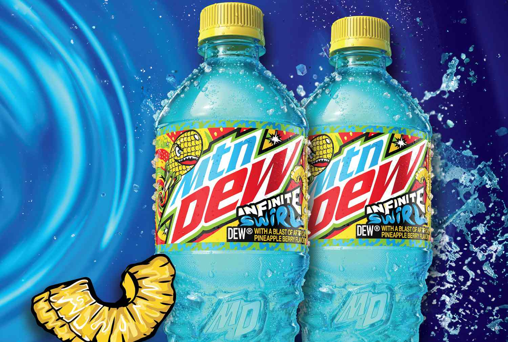

Mountain Dew is a citrus-flavored carbonated soft drink that was first introduced in 1940.
It is known for its bold and refreshing taste, making it a popular choice among consumers who enjoy a more intense flavor.
Mountain Dew is often enjoyed on its own or as a mixer in various cocktails and mocktails.
The brand has expanded to include various flavors and limited-edition releases over the years, catering to a wide range of tastes and preferences.
